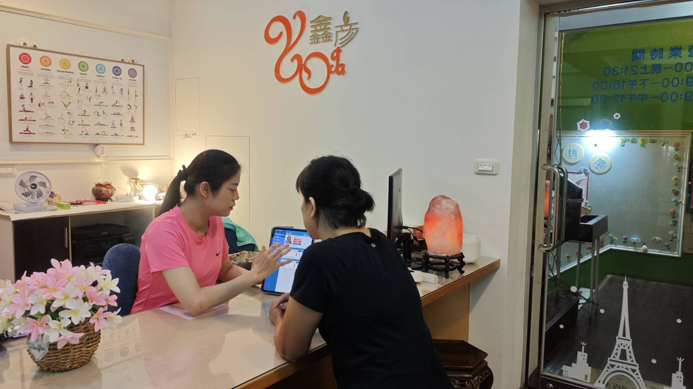
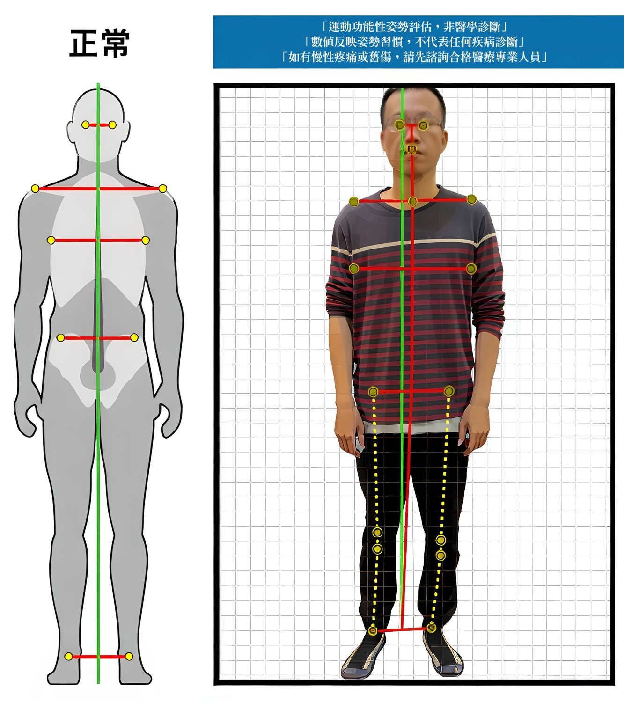
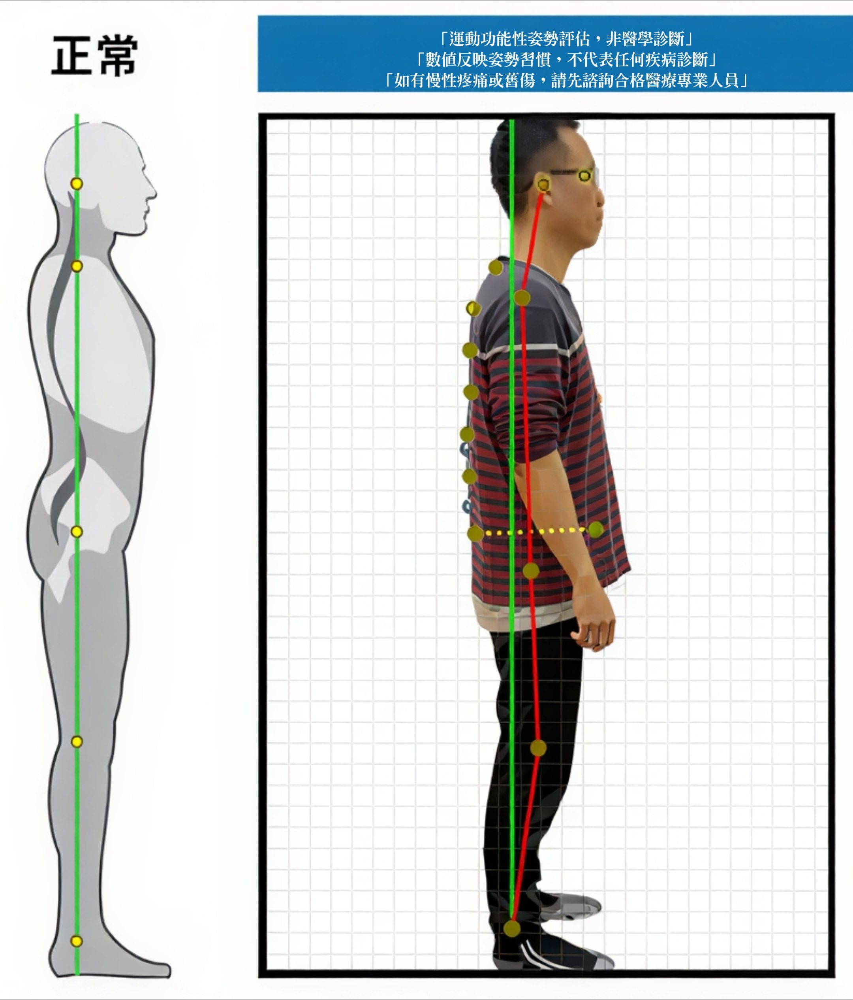
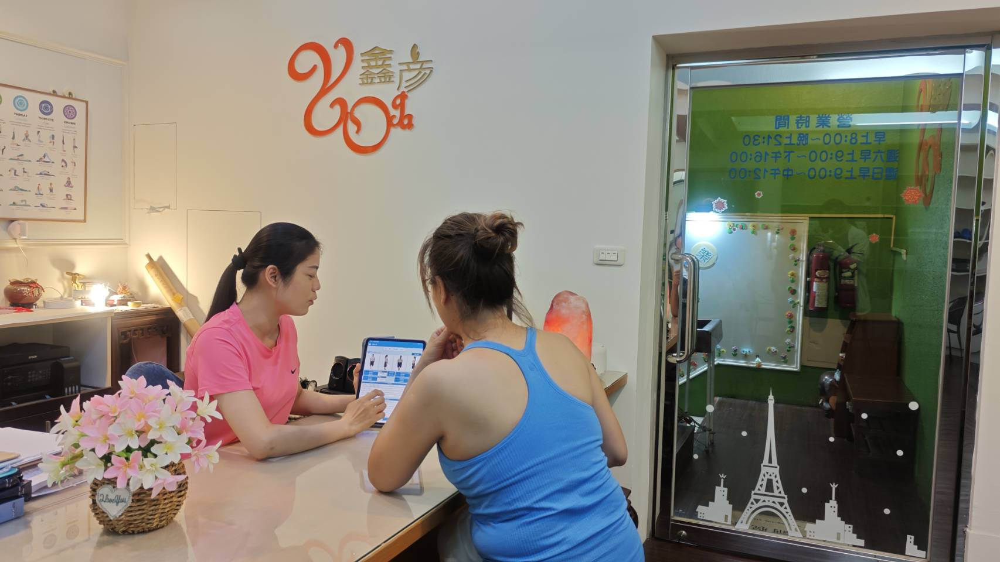
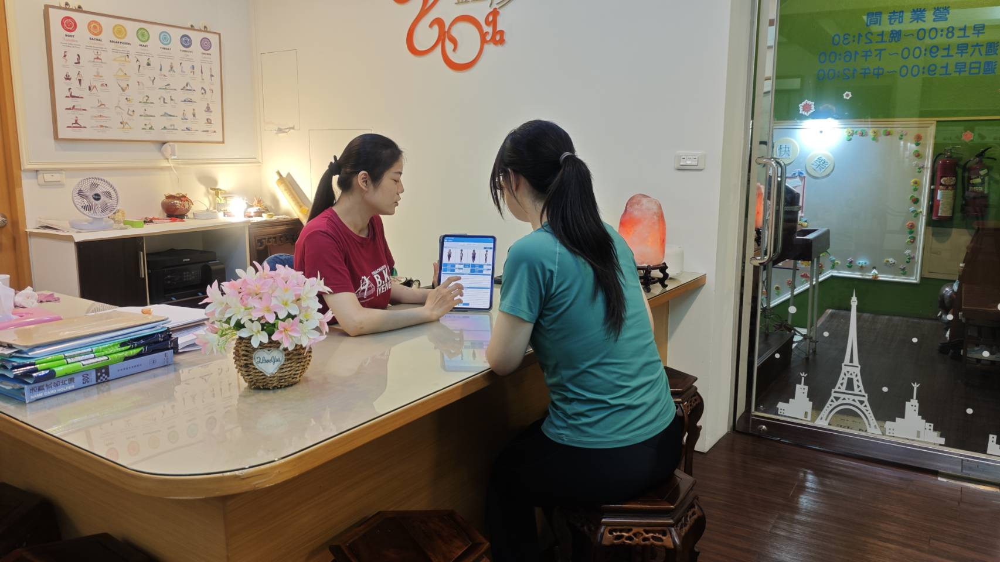

很多時候不是你拉筋不夠努力，而是日常看不見的「高低肩、頭前傾、骨盆微歪」讓緊繃一再回來。不用先會瑜伽，花 20 分鐘拍出真實角度，由老師當面陪你找出身體的代償起點。
原價 NT$699 · 首次到店優惠 NT$299（需事先透過 LINE 預約 · 每人限一次）
⭐ Google 4.9★（91 則真實好評） · 高雄左營在地教學 10 年+


當身體長期用代償在撐住日常姿勢，單靠死命拉筋或加重按摩，往往隔天又緊回原點。
按完當下明明很鬆，但只要坐回電腦前、滑手機半小時，後頸與肩膀熟悉的緊繃感又立刻爬上來。
看到鏡子裡的自己含胸駝背，想用力把背挺直，結果胸口沒打開，反而變成折腰硬撐、下背更累。
拍照時頭或肩膀總習慣歪一邊、褲頭常轉向，或是久站、走久一點，單側腰臀與膝蓋就開始卡卡發痠。
跟著網路影片做伸展，別人說痠的是臀腿，你做完卻是脖子跟腰在痛，不知道自己到底哪裡出力錯了。
AI 體態檢測（AI 姿勢分析）是一項約 20 分鐘的現場運動功能性姿勢評估，透過正面與側面光學拍攝，量化呈現你的「肩線左右高低、頭部前傾角度、胸椎弧度與骨盆前後傾軸線」，再由擁有 10 年以上教學經驗的資深老師當面逐項解讀。許多人努力拉筋卻越拉越緊，是因為一直在拉「被代償拉扯的結果」，卻沒看見「真正卡住的源頭」（本檢測屬運動功能性姿勢觀察，非醫學診斷或醫療行為）。
| 比較項目 | 自己憑感覺拉筋／只靠被動按摩 | 鑫彥 AI 體態檢測 ＋ 老師當面解讀（20 分鐘） |
|---|---|---|
| 怎麼找問題 | 哪裡痠就拚命拉哪裡、壓哪裡，常忽略對側或骨盆代償 | 正面＋側面光學角度畫面，一眼看清頭前傾、高低肩與骨盆軸線 |
| 誰幫你判讀 | 自己看影片猜，或只拿到一張看不懂的機器數據表 | 10 年+ 經驗老師當面陪你看圖，把角度翻譯成你聽得懂的日常用力習慣 |
| 下一步方向 | 不確定自己適合團課、壁繩還是一對一，怕跟不上 | 依你的真實體態起點給建議；檢測後零推銷壓力，完全由你決定 |


★★★★★今天體驗 AI 檢測與調整，身體狀況沒有想像中的好，經過老師的調整，覺得肩頸放鬆了，腰部感覺比較鬆了，很棒的一次體驗。
— 黃之柔 · Google 評論
★★★★★用姿勢檢測來評估身體結構，讓我們進入課程後能以更標準的動作來學習，避免運動傷害產生，是很好的瑜珈運動館。
— 徐芳芳 · Google 評論
★★★★★今天體驗了 AI 姿勢檢測+一對一壁繩調整，本來肩頸僵硬、腰部痠痛，訓練完後肩頸放鬆，腰部有力，呼吸順暢。
— 謝春姿 · Google 評論
★★★★★做完姿勢檢測+一對一壁繩調整，肌肉有放鬆，肩頸痠痛有改善，這段時間練瑜珈，老師很親切，我練完感覺肌力有變好。
— 黃秀卿 · Google 評論
假設你說：「我伸手拿上層櫃子的杯子，肩膀總會跟著抬起來。」檢測當天，老師會陪你看報告裡自然站立時的肩線。如果之後來上課，老師會請你做一次伸手拿杯子的動作，看看手抬到哪裡，你開始覺得費力。
如果手一抬高就忍不住憋氣，老師可以請你先抬低一點，再問：「到這裡，呼吸還順嗎？」如果這個高度比較自在，今天就從這裡開始練。
時段以 LINE 回覆確認為準。查看教室位置與周邊停車交通
AI 體態檢測（現場拍攝、姿勢角度分析、老師當面解讀）
原價 NT$699首次到店優惠
首次體態了解方案
NT$299
是的。檢測在高雄左營教室進行，老師會在現場協助拍攝、查看姿勢角度並當面解讀。
包含一次 AI 體態檢測的現場拍攝、姿勢角度分析，以及老師當面解讀。原價 NT$699，首次到店優惠 NT$299。此評估不是醫學診斷。
限第一次到鑫彥瑜珈體驗 AI 體態檢測的訪客，每人限一次。請事先透過 LINE 預約，並以 LINE 回覆確認的時段為準。
現場檢測與老師解讀約 20 分鐘，實際時間會依當天狀況略有不同。
不用。老師完成解讀後，是否進一步安排課程由你決定，沒有推銷壓力。
可以。檢測是為了先了解目前的體態，不需要先具備瑜伽基礎。
預約前先判斷
這 6 篇判斷文會把「上課、按摩、先檢測、先觀察」分清楚，讓你在預約前更知道自己想問什麼。